BrandFolio: 5 hours. 39 screens. One investor pitch.
Designed both sides of an influencer marketing platform in a five hour sprint for a client's investor pitch. After an initial feedback, I rebuilt the visual language using gradient based surfaces and delivered the final designs one hour before the presentation.
| Company | Sapmen C — client project (BrandFolio) |
| Role | UI Designer — replaced the previous designer |
| Timeline | 5-hour sprint within Mar – Aug 2025 internship |
| Scope | Find Influencers module + Campaign module |
| Outcome | Delivered for investor pitch |
Overview
BrandFolio is an influencer marketing platform. Brands create and manage campaigns on one side, and discover and vet influencers on the other. I was brought in to replace the previous designer, briefed by the design head, and handed the client's PRD, wireframes, and design system.
What I delivered
39 production ready screens across two modules in five hours, followed by a complete visual redesign after stakeholder feedback. The final version shipped one hour before the investor pitch.
The 5-hour window.
After a month without project work, I was pulled into a client meeting at noon. The brief was simple but demanding: design both sides of an influencer marketing platform for an investor pitch happening that evening. Within minutes, I had the PRD, wireframes, Figma file, and one deadline — 5 hours.
I didn't have time to question UX decisions in the PRD, iterate on information architecture, or push back on form structures. I followed the wireframe structure and focused entirely on making the screens look impressive because that's what the pitch needed. The investors weren't going to click through a prototype. They were going to see screens in a deck and decide if this looked like something worth funding. So I made pretty screens. I'm not going to dress that up as something it wasn't.
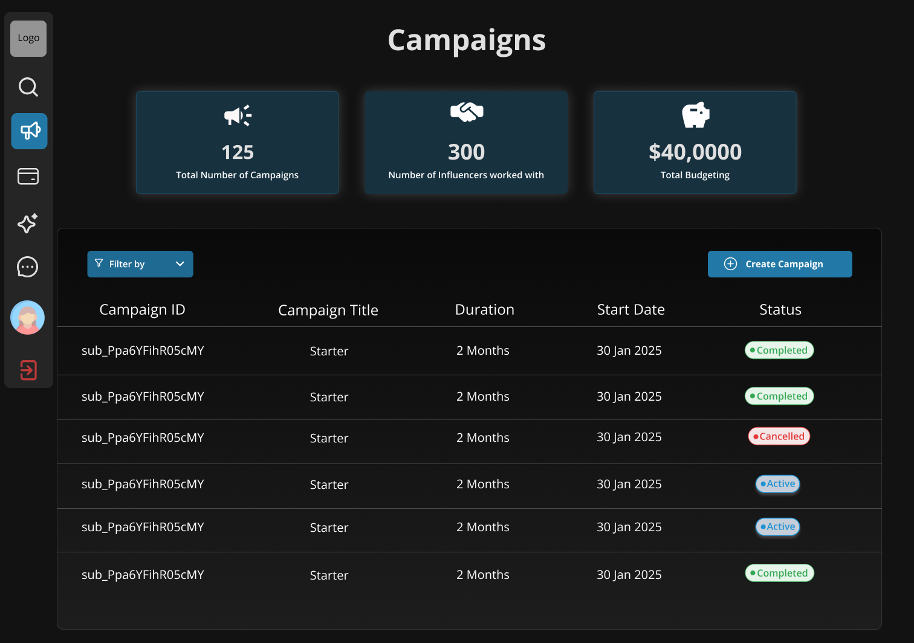
Find Influencers
The Find Influencers experience helped brands discover and evaluate creators without repeatedly leaving the search flow. Search, inline profile previews, and advanced filtering made it easier to compare creators, while preserving browsing context throughout the discovery process.
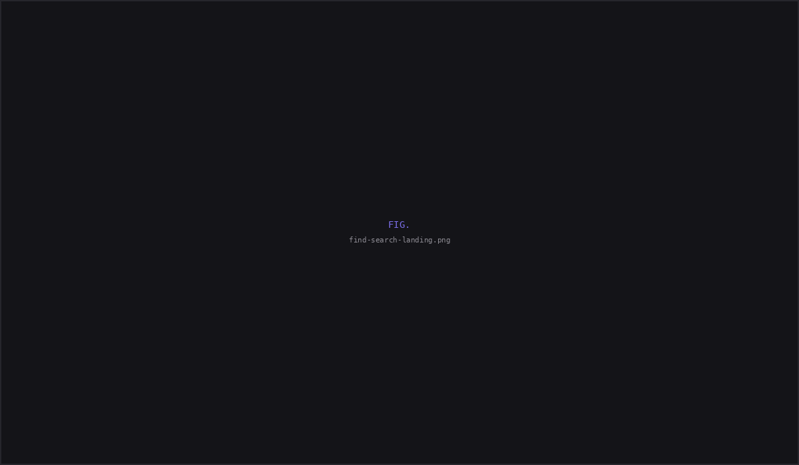
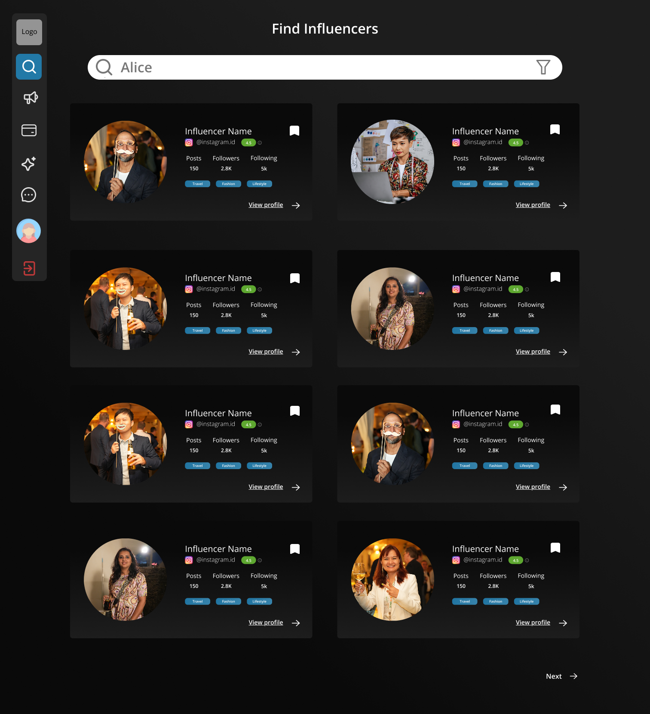
Profile previews expanded inline instead of navigating to a separate page, allowing brands to compare multiple creators without losing their search results. Autocomplete reduced friction for users looking for specific creators, while advanced filters supported campaigns targeting niche audiences across locations, follower ranges, and platforms.
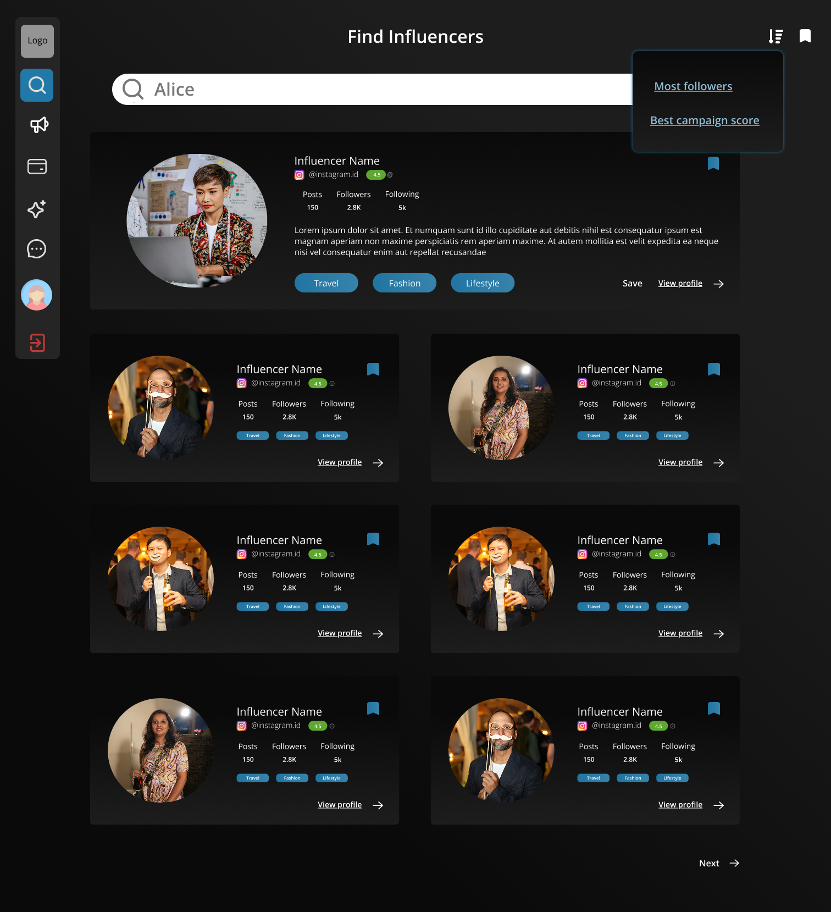
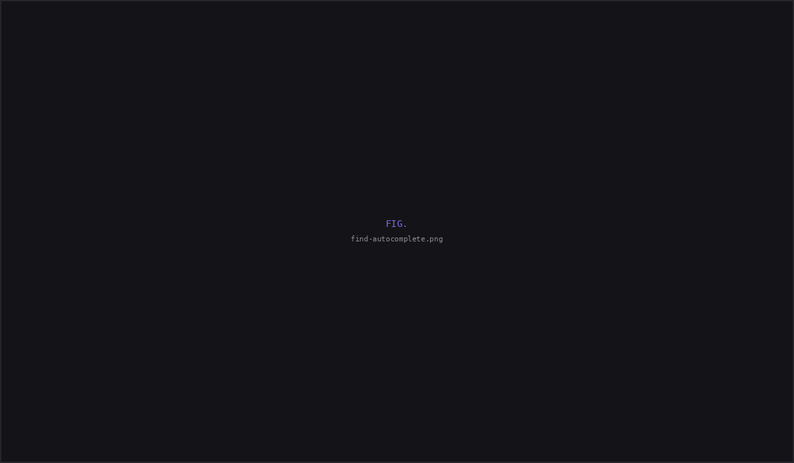
Advanced filtering supported highly targeted campaigns, allowing brands to narrow creators by platform, location, audience size, and content category. This reduced manual browsing when campaigns required specific creator profiles rather than broad discovery.
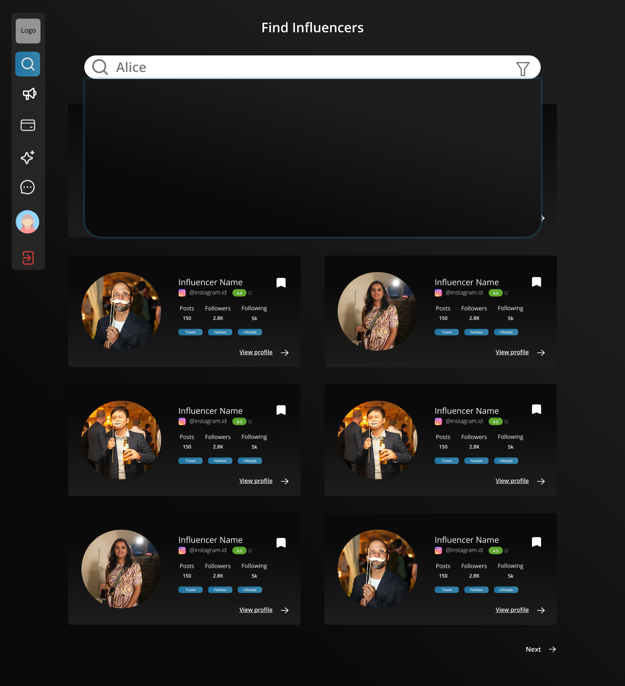
Campaign module
The Campaign module served as the operational hub, connecting campaign creation, creator targeting, and outreach in a single workflow. Structured forms and searchable controls helped manage large datasets without overwhelming the interface.
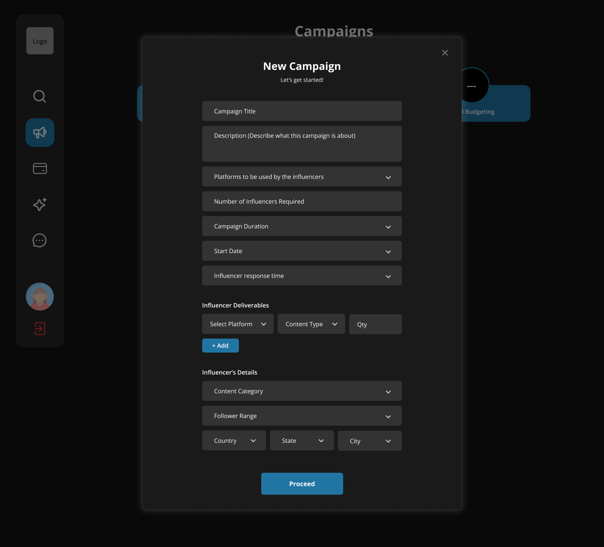
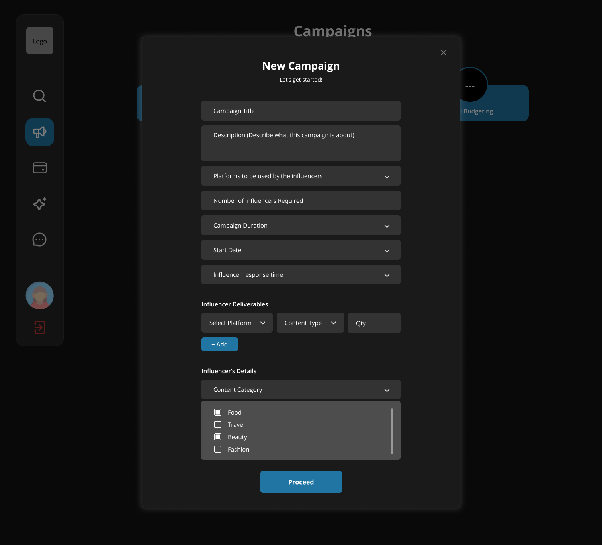
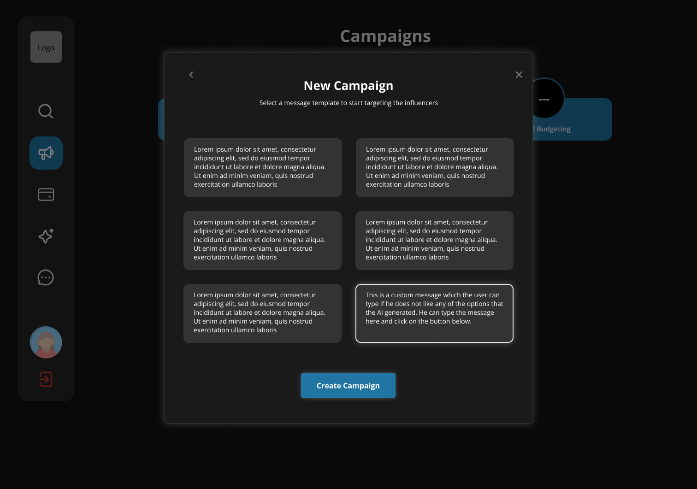
Managing a campaign
Campaign management brought planning, creator progress, and deliverables into one workspace, allowing brands to monitor campaigns and recover from issues without restarting the workflow.
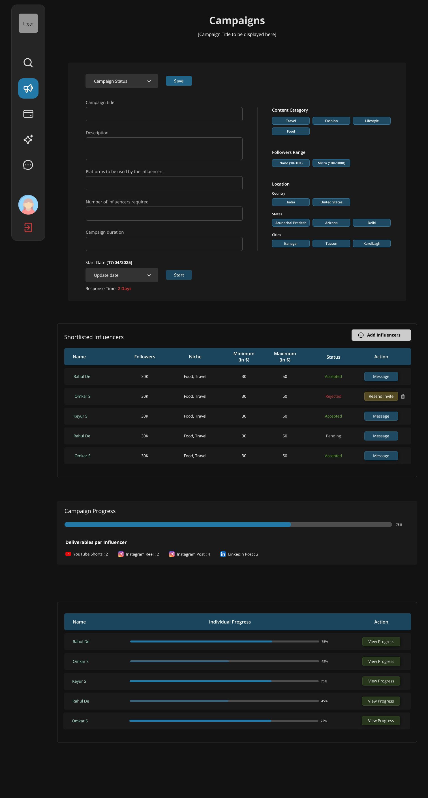
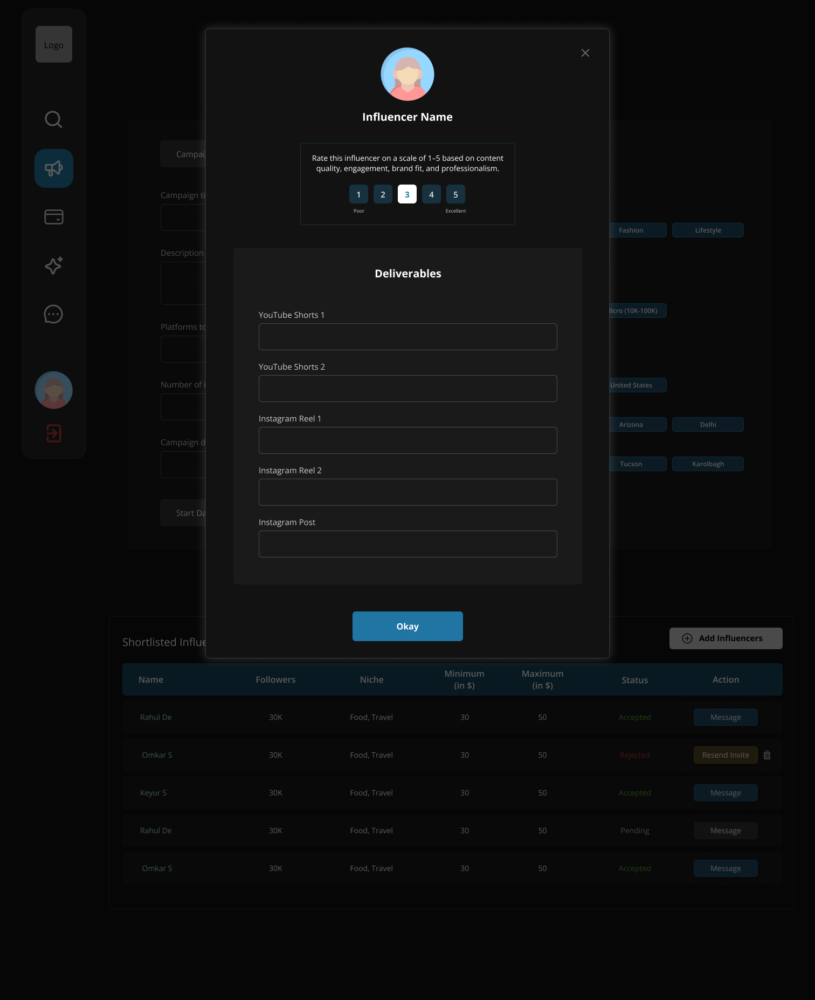
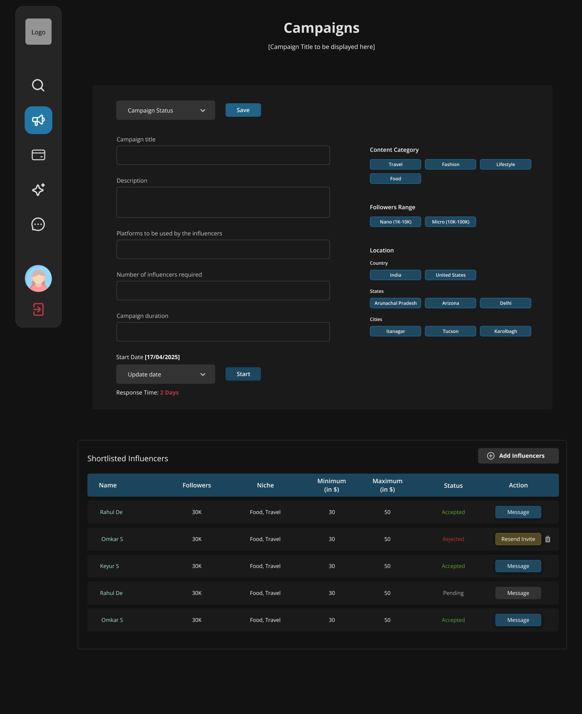
The feedback that changed the direction
The first concept didn't land. The feedback was blunt: it felt like a wireframe in dark mode not something investors would remember. I had prioritized clarity over visual impact, and it showed.
I studied products like CRED to understand how gradients, layered surfaces, and depth make dense interfaces feel premium. The information architecture stayed the same the PRD was already right. I redesigned the visual language, not the workflow. The surface just needed to look like it belonged in a pitch deck.
Round one — flat dark
Solid dark fills. Every panel blends together. Functional, but it reads as "dark mode switched on" a wireframe in a dark theme. "Basic, bland, boring."
Final — CRED-inspired gradients
Gradient backgrounds and accents on cards and stat columns. Same structure, now with depth through tone. Feels crafted, not default and shipped an hour before the pitch.
The final version shipped one hour before the investor pitch. The information architecture never changed the visual language did. Sometimes the interface isn't wrong; the presentation is.
Reflection
The first version isn't the one that ships. Rebuilding was the real deliverable.
This project wasn't about inventing a new workflow. The information architecture came from the PRD, and my responsibility was to make it investor ready under extreme time pressure. The biggest lesson wasn't gradients, it was learning to accept blunt feedback, rebuild quickly, and improve the work instead of defending my first solution.